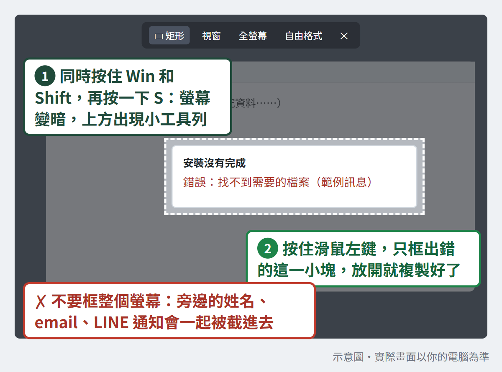
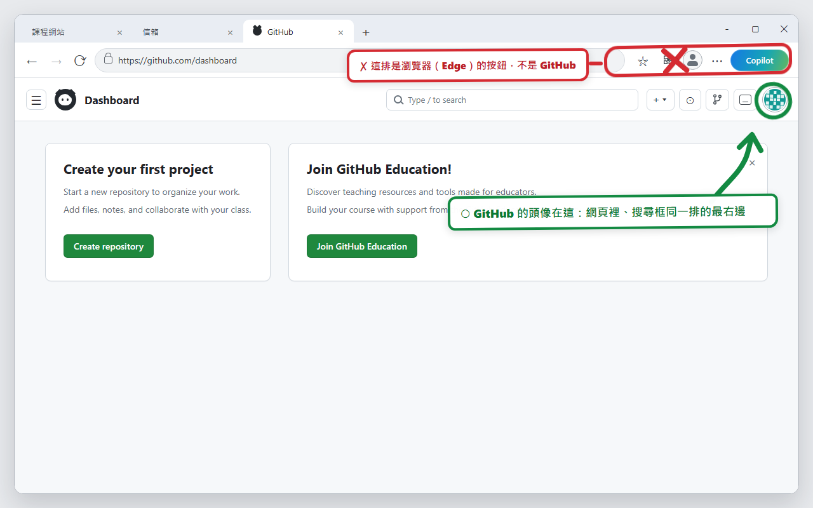
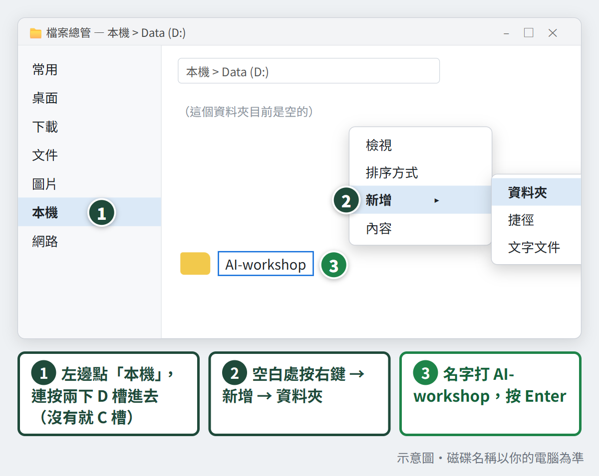
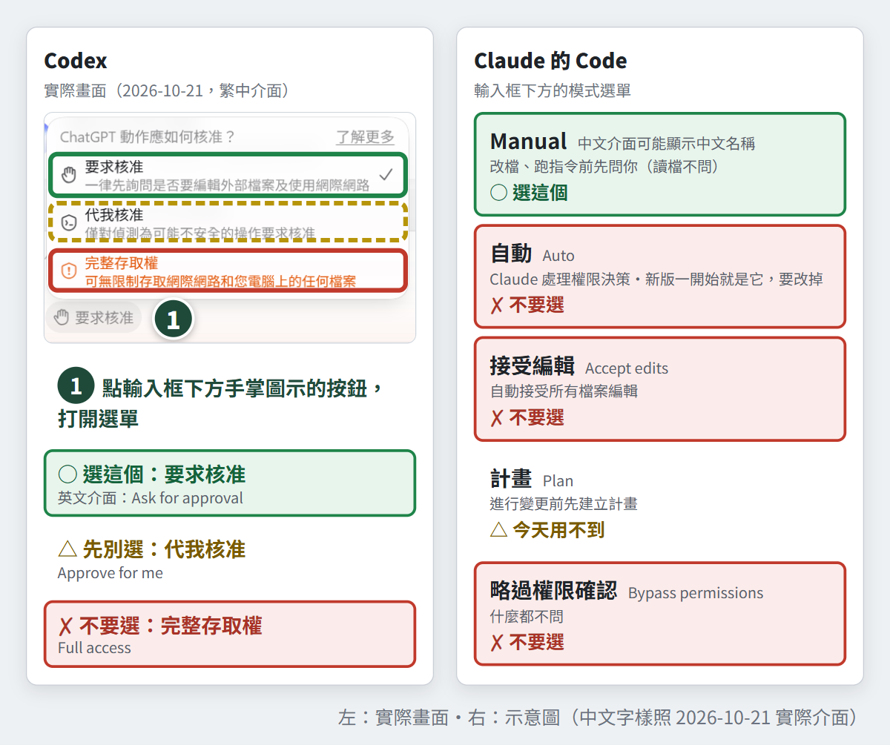
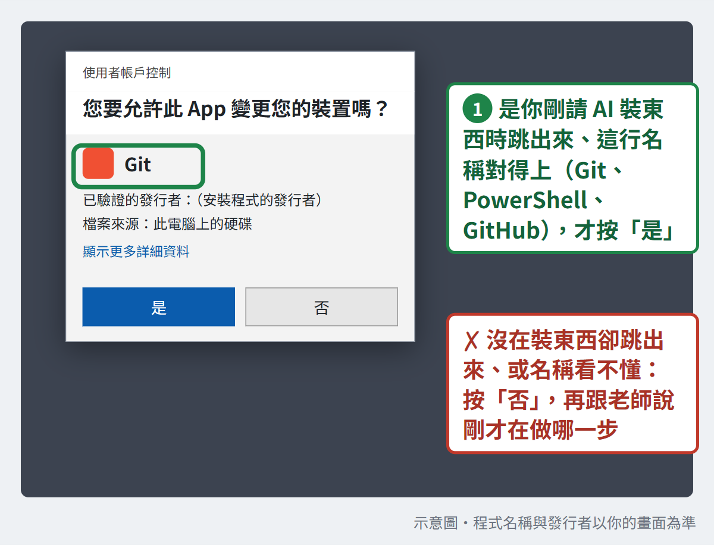
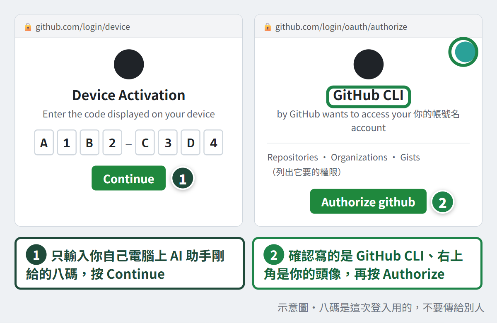
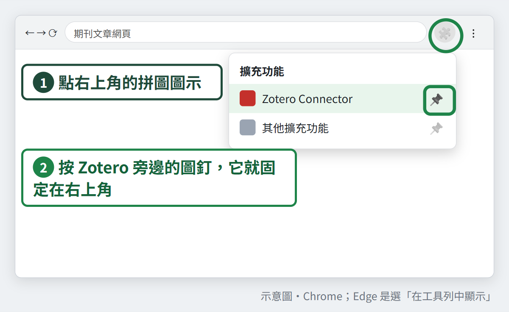

先知道
不用會寫程式，帶自己的筆電來
- 不用會寫程式。原本要打給電腦的指令（一行一行的英文命令），都由「AI 助手」代打。這一頁說的 AI 助手，是 ChatGPT 桌面版裡的 Codex，或 Claude 桌面版裡的 Code：裝在你的電腦上，會打開資料夾動手做事（第 2、3 項會裝好）。在瀏覽器裡開的 ChatGPT、Claude 叫「網頁版」，只能聊天、看你貼的圖，碰不到你的電腦。你的工作是：AI 助手跳出來問你時，看懂再同意；它說做完了，你自己打開結果檢查。
- 請帶自己能裝軟體的筆電。學校統一控管的電腦常常裝不了東西。怎麼分辨：平常裝軟體要請電算中心或助理來輸入帳號密碼的那台，當天多半用不了，請換一台。
- 這一頁的勾選只存在你這台電腦的這個瀏覽器裡，不會傳給任何人。換瀏覽器、用無痕視窗、清掉網站資料或改用手機，勾選都不會跟著走。
裝得好
在家照順序做完，建議留兩個晚上
-
1先學一招：截圖問 AI你自己做・卡住問網頁版
後面每一項卡住，都靠「把畫面拿給 AI 看」解決。這一項先學會怎麼截、怎麼貼就好，不用真的送出；第 2 項註冊好帳號，就隨時能問。
同時按住 Win 鍵（鍵盤左下角有四個小方塊圖案的那顆）和 Shift，再按一下 S。螢幕變暗後，按住滑鼠左鍵拉一個框，把卡住的地方框起來，放開就複製好了。再到 AI 打字的框裡（還沒有 AI 帳號，就先打開 Word）按 Ctrl＋V 貼上，會出現剛才框起來的那一小塊圖。

示意圖，實際畫面以你的電腦為準。點圖可以放大。 同時按住 Control、Command、Shift 三個鍵，再按一下 4，游標變成十字後拉一個框，把卡住的地方框起來，放開就複製好了。再到 AI 打字的框裡（還沒有 AI 帳號，就先打開 Word）按 Command＋V 貼上，會出現剛才框起來的那一小塊圖。
只框出錯的那一小塊，不要框整個螢幕。截圖會整張送到 AI 的雲端。送出前看一眼圖裡有沒有姓名、病歷號、email、登入驗證碼（簡訊或 App 給的那串數字）、QR code 或 LINE 通知；有就重截。有密碼、備援碼、學生或受試者資料的視窗，截圖前先關掉。
截好圖，先把圖貼進 AI 的打字框，再複製下面這句貼在後面：
我在做 10/28 工作坊的行前準備，第＿項「＿＿」卡住了，畫面如附圖。請先只看、不要動：告訴我畫面上發生什麼事、哪裡不對勁；再一步一步帶我做，每次只說一步。如果需要我輸入這台電腦的管理員密碼，先停下來告訴我，我自己輸入。
貼上之後，把畫底線（＿）的地方都換成你的情況，再送出。這句不用另外存：把這一頁加入書籤（Windows 按 Ctrl＋D，Mac 按 Command＋D），卡住時回來按「複製」就好。
貼到哪一個 AI？看你做到第幾項：
第 1～7 項、第 11 項：問網頁版瀏覽器打開 chatgpt.com 或 claude.ai，免費帳號就能貼截圖問。網頁版看得到你貼的圖、會一步一步教你，但它碰不到你的電腦，按鈕要你自己按。還沒有帳號的人，第 2 項第一步就是註冊，註冊完就能問。第 8、9、10、12 項：交給 AI 助手做第 6 項在 AI 助手（Codex 或 Claude 的 Code）裡打開練習資料夾之後，AI 助手就能直接替你裝、替你做。AI 助手自己卡住（不回應、一直出錯），就截圖回網頁版問。完成判準：截一小塊圖，貼到 AI 的打字框（還沒有帳號就貼到 Word），看得到剛才框起來的那一塊。 -
2ChatGPT：帳號＋桌面版＋找到 Codex你自己做・卡住問網頁版
先到 chatgpt.com 登入或註冊，記住用的是哪個帳號、用哪種方式登入（Google、Apple 或 email）。再到官方下載頁 chatgpt.com/download 下載桌面版（裝在電腦上的 ChatGPT 程式，像 LINE 也有電腦版那樣），照畫面裝好，用同一個帳號、同一種方式登入，不然可能變成兩個帳號；登入後核對 email 一樣就對了。
下載完找不到安裝檔：看瀏覽器右上角的下載清單（向下箭頭圖示），從那裡打開。Windows 也可能改成打開「Microsoft Store」（微軟的軟體商店），在那裡照畫面安裝也可以。
Mac 需要 macOS 14 以上（蘋果選單 → 關於這台 Mac，可以看版本）。
電腦裡原本就有舊版 ChatGPT 的話，新版可能會另外裝一個，舊版改名叫 ChatGPT Classic。兩個並存是正常的，開名字沒有 Classic 的那個。
打開桌面版，左上角的選單可以切換 ChatGPT 和 Codex。Codex 是 ChatGPT 裡會打開資料夾、動手做事的那一面。切到 Codex 之後，左上角會顯示 Codex，下面有可以打字的輸入框，這樣就對了；先不用叫它做事。
完成判準：在桌面版先切回 ChatGPT（不是 Codex），隨便打一句話送出；再到瀏覽器的 chatgpt.com 按重新整理（網址列旁邊的圓形箭頭），左邊的對話清單裡看得到剛才那段。兩邊都點左下角的頭像，看到的 email 一樣。最後再切到 Codex，左上角顯示 Codex。卡住怎麼問網頁版 AI
我在裝 ChatGPT 桌面版，卡在＿＿（例如：登入被擋／裝好打不開／找不到 Codex），畫面如附圖。請告訴我畫面上發生什麼事，再一步一步帶我。我用的是＿＿（Windows／Mac）。
貼上之後，把畫底線（＿）的地方都換成你的情況，再送出。
-
3Claude：帳號＋桌面版你自己做・卡住問網頁版
先到 claude.ai 登入或註冊，一樣記住登入方式。再到官方下載頁 claude.com/download 下載桌面版，照畫面裝好，用同一個帳號、同一種方式登入。
桌面版裡有「Code」（通常在畫面上方中間，和 Chat、Cowork 並排，Cowork 這次用不到；舊版畫面可能在側邊欄），這是會打開電腦資料夾、動手做事的那一面。Code 要 Pro 以上的付費方案才能用，免費帳號點了會請你升級。這是正常的，先關掉，下一項再決定要不要付費。
完成判準：在桌面版的 Chat（不是 Code）隨便打一句話送出，再到瀏覽器的 claude.ai 按重新整理，看得到那段對話。兩邊都點左下角的名字縮寫（圓圈裡的字母），看到的 email 一樣。有付費的人，再確認點得開 Code。卡住怎麼問網頁版 AI
我在裝 Claude 桌面版，卡在＿＿（例如：登入被擋／裝好打不開／點 Code 要我升級），畫面如附圖。請告訴我畫面上發生什麼事，再一步一步帶我。我用的是＿＿（Windows／Mac）。
貼上之後，把畫底線（＿）的地方都換成你的情況，再送出。
-
4決定要不要付費你自己做・卡住問網頁版
不付費也可以來上課。當天分三部分：第一部分把 ChatGPT 和 Claude 設定成你的研究助理；第二部分讓 AI 在同一個資料夾裡組成研究小隊、分工做事；第三部分另外建一個論文資料夾，讓同樣的 AI 小隊陪你走論文流程（管書目、分析資料、畫圖、排成 PDF）。
第一部分大部分免費也能做，少數功能要付費，當天的頁面會標出來。第二、三部分都要用 AI 助手，差別主要在這兩部分：
你的方案 第二、三部分：AI 怎麼幫你做事 兩家都免費 只用 ChatGPT 的 Codex 從頭做到尾；免費的使用量（額度）較少，可能做到一半要停下來等 只付 ChatGPT 只用 Codex 從頭做到尾；額度比較多，比較不會做到一半停下來 只付 Claude 只用 Claude 的 Code 從頭做到尾 兩家都付 兩個 AI 接力，一個做、一個檢查 價格以官方定價頁為準：ChatGPT 看 chatgpt.com/pricing，Claude 看 claude.com/pricing（點了會開新分頁）。只為這場訂的話，用完記得取消自動續訂。
完成判準：你知道自己是上面表格裡的哪一列。 -
5GitHub 帳號你自己做・卡住問網頁版
GitHub 是一個網站，用來放資料夾的備份、讓不同電腦拿到同一份；記錄每一次修改的，是第 8 項的 git。到 github.com 註冊一個帳號。註冊中 GitHub 會寄一封信到你的信箱：信裡是一組數字，就抄回註冊網頁；信裡是按鈕，就按它。註冊後如果跳出一整頁英文問卷，可以略過不填。已經有帳號的人，確認還登得進去就好。
登入時如果畫面要你設定兩步驟驗證，就照做：手機到 App Store 或 Play 商店裝一個驗證 App（例如 Google Authenticator）；打開它按「＋」再選掃描，對準網頁上的 QR code；App 會出現一組 6 位數字，把它打回網頁。最後網頁會給你一組備援碼（一串英數字），存成檔案或抄在紙上收好，不要放在練習資料夾裡（按鈕字樣以你的畫面為準）。備援碼是手機不能用時的救援鑰匙，不傳給 AI，也不傳給老師。沒被要求的人不用特地開。
完成判準：登入後點網頁右上角的圓形頭像（看下圖），選單最上面就是你的帳號名。把帳號名抄下來，第 10、12 項要拿來核對。
GitHub 的頭像在網頁右上角（搜尋框那一排的最右邊）；點它就看得到你的帳號名。不要點到瀏覽器自己的帳號鈕。 -
6建一個練習資料夾，在 AI 助手裡打開你自己做・卡住問網頁版
後面幾項都要在 AI 助手裡做。AI 助手主要在你指定給它的資料夾裡工作，但它還是有可能讀到電腦裡別的檔案（哪些動作會先問你，看第 7 項）。所以先建一個空的練習資料夾給它，不要讓它在放研究資料的地方工作：
- 打開檔案總管（工作列上黃色資料夾的圖示）。
- 左邊點「本機」，右邊連按兩下 D 槽進去（名字後面括號寫 (D:) 的那一個，例如「Data (D:)」或「本機磁碟 (D:)」）；沒有 D 槽就連按兩下「本機磁碟 (C:)」。
- 在空白處按滑鼠右鍵 →「新增」→「資料夾」，名字打 AI-workshop，按 Enter。
建好的位置寫成 D:\AI-workshop，意思是「D 槽裡的 AI-workshop 資料夾」（沒有 D 槽的人是 C:\AI-workshop）。這種寫法叫「路徑」，之後 AI 告訴你檔案在哪，都會這樣寫。不要放桌面或「文件」：那裡的檔案常被 OneDrive 自動同步到雲端。建不了（跳出權限不足），就停在這一項求救。

示意圖，實際畫面以你的電腦為準。點圖可以放大。 - 打開 Finder，上方選單點「前往」→「個人專屬」（你的使用者資料夾，圖示是一棟小房子）。
- 上方選單點「檔案」→「新增檔案夾」，名字打 AI-workshop，按 Return。
建好的位置會寫成像 /Users/你的使用者名稱/AI-workshop 這樣，意思是「個人專屬裡的 AI-workshop 資料夾」。這種寫法叫「路徑」，之後 AI 告訴你檔案在哪，都會這樣寫。不要放桌面或「文件」：那裡的檔案常被 iCloud 自動同步到雲端。
然後在 AI 助手裡打開這個資料夾。用 Codex：Codex 把它叫「專案」，意思就是「讓它工作的資料夾」，跟研究計畫無關。
- 在 Codex 輸入框上方點「選擇專案」→「新專案」。
- 「來源資料夾」按「新增」，會跳出選資料夾的視窗：照上面建資料夾的路走到 AI-workshop，點一下它，再按「選擇資料夾」。
- 「專案名稱」也打 AI-workshop，再按「建立專案」。
英文介面字樣不同，位置一樣。
用 Claude 的 Code（有付費 Claude 的人）：先在環境選單選「本機（Local）」，再選這個資料夾。只用免費 Claude 的人，這一段跳過。
不要選放有研究資料、受試者或學生資料的資料夾，AI 打得開的資料夾它就讀得到。這個練習資料夾只放假資料或公開資料。
完成判準：AI 助手的畫面上顯示 AI-workshop。 -
7調一下 AI 助手的授權你自己做・卡住問網頁版
這一項決定 AI 動手前要不要先問你。後面幾項它會開始替你裝東西，所以先調好。
- Codex：輸入框下方有一顆權限按鈕（下圖 1 號的位置；按鈕上顯示的是目前的設定，選好「要求核准」後是手掌圖示），點它打開選單，選 要求核准（英文介面叫 Ask for approval）。在你打開的資料夾裡，它會直接建檔、改檔、跑程式；要動資料夾以外的檔案、上網或裝東西，才會先問你。不要選「完整存取權」（Full access），也先別選「代我核准」（Approve for me，由系統判斷要不要問）。
- Claude 的 Code（有付費、要用 Code 的人）：輸入框下方的模式選單，選 Manual（意思是「手動」）。新版可能一開始是「自動」（Auto）；不管現在顯示什麼，都改成 Manual。選 Manual 之後，改檔、跑指令前都會先問你；只是讀檔案不會問。
不要選：「自動」（系統自己判斷要不要問）、「接受編輯」（Accept edits，改檔不問）、「略過權限確認」（Bypass permissions，什麼都不問）。「計畫」（Plan）今天用不到。
中文介面如果看不到 Manual 這個字：寫著「自動」「接受編輯」「計畫」「略過權限確認」的都不要選，剩下的那一個就是（以你的畫面為準）。

左邊 Codex 是 2026-10-21 的實際畫面（繁中介面）；右邊 Claude 是示意圖，中文字樣照實際介面。點圖可以放大。 選單字樣以你電腦上看到的為準。凡是說明寫著「不問、不限制、整台電腦都能讀寫」的都不要選。
完成判準：你準備用哪一個，就確認哪一個。Codex 的權限按鈕顯示 要求核准（或 Ask for approval）；有用 Claude 的 Code，模式選單顯示 Manual（中文介面照上面刪去法找到的那一個）。兩個都要用的人，兩個都要確認。找不到，先別往下做，截圖問網頁版，或回信問陳老師。 -
8裝 gitAI 助手替你做・卡住問網頁版
git 是替資料夾記住每一次修改的工具。在第 6 項打開的 AI 助手裡貼這句。第 8～12 項灰框裡的句子都是寫給 AI 看的，裡面的英文名稱（像 winget）你不用懂：按「複製」、貼到 AI 助手的輸入框、按 Enter 送出就好。
請幫我確認這台電腦有沒有裝 git；沒有的話幫我裝好，Windows 用 winget 或 git-scm.com 官方網站，不要從其他網站下載。過程中要我做什麼，請一步一步告訴我。裝完如果找不到 git，先檢查安裝位置，不要反覆重裝。最後把版本號給我看。
送出後，AI 會在對話裡一邊說明一邊做，可能要幾分鐘。它要上網下載或執行安裝程式之前，會先跳出一個框請你同意（第 7 項設的就是這個）。框裡多半是一行英文，是 AI 想執行的指令；看不懂是正常的，只要看一件事：裡面有沒有 git 這個字（大小寫都算）。
- 有，就按同意。有好幾種同意時，選只同意這一次的那個，不要選「以後都自動同意」那一類（按鈕字樣以你的畫面為準）。
- 沒有，或你看不懂：就按拒絕，拒絕不會弄壞東西；再問它「這一步要做什麼、為什麼要做」，或截圖問網頁版「這個要不要同意？」。
接著螢幕可能變暗，跳出一個寫著「您要允許此 App 變更您的裝置嗎？」的視窗（看下圖）。這是安裝的正常步驟，這樣判斷：
- 是你剛請 AI 裝東西時跳出來的，而且視窗上的名稱看得到 Git → 按「是」。
- 你沒在裝東西卻跳出來，或名稱看不懂、對不上 → 按「否」，再把剛才在做哪一步告訴網頁版 AI 或陳老師（這個視窗通常截不到圖，可以用手機拍）。
- 沒跳出來也正常。

示意圖，實際畫面以你的電腦為準。點圖可以放大。 可能跳出要你安裝「命令列開發者工具」的視窗，git 就在裡面，按「安裝」，等幾分鐘。
安裝視窗如果要你輸入密碼或管理員帳號，自己在那個視窗輸入（通常是你開機登入電腦的那一組），不要貼給 AI；不知道是哪一組，就停下來求救。
完成判準：它回你 git 的版本號，像「git version 2.51.0」這樣（數字每台可能不一樣，後面也可能多一段字）。 -
9Windows 才要做：裝 PowerShell 7AI 助手替你做・卡住問網頁版
Mac 不用做，直接打勾。
AI 助手在 Windows 上常透過 PowerShell（Windows 下指令的工具）做事。電腦內建的是舊版，AI 用它存中文檔案時，有時會存成 git 認不出的格式，之後就看不出改了哪一行。PowerShell 7 是新版，裝了可以避開大部分這類問題。貼這句：
我用的是 Windows。請幫我確認有沒有 PowerShell 7（程式名叫 pwsh）；沒有的話用 winget 或微軟官方網站幫我裝好，跟內建的舊版並存，不要移除舊的。要我做什麼請一步一步說。裝完如果找不到 pwsh，先檢查安裝位置，不要反覆重裝。最後實際用 pwsh 跑一次，把版本號給我看；之後這個對話要用 PowerShell 時，都用 pwsh。
AI 請你同意時，判斷方式同第 8 項，這次看框裡有沒有 pwsh 或 PowerShell。一樣可能跳出「您要允許此 App 變更您的裝置嗎？」，名稱跟 PowerShell 有關、是你剛請 AI 裝的，再按「是」。
完成判準：AI 實際用 pwsh 跑過，回報一個 7 開頭的版本號（像 7.6.4 這樣，後面的數字每台可能不一樣）。 -
10讓電腦記住你的 GitHub 帳號AI 助手替你做・卡住問網頁版
第 5 項是在網頁上登入 GitHub；這一項是讓電腦也記住你的帳號，後面 AI 才能替你把資料夾放上 GitHub。AI 助手會裝一個叫 gh 的小程式來做這件事。貼這句：
請幫我裝 GitHub 的命令列工具 gh，然後登入我的 GitHub 帳號。請一步一步告訴我要做什麼。要我輸入的八碼和網址，請單獨貼在對話裡給我。最後告訴我登入的帳號名是什麼。
AI 請你同意時，判斷方式同第 8 項，這次看框裡有沒有 gh 或 GitHub（Mac 也可能是 brew 或 Homebrew）。
安裝時一樣可能跳出「您要允許此 App 變更您的裝置嗎？」，名稱跟 GitHub 有關、是你剛請 AI 裝的，再按「是」。
Mac 上它可能要先裝另一個安裝工具（Homebrew）。要輸入電腦密碼時：跳出系統視窗，就自己在視窗裡輸入；如果 AI 要你打開「終端機」自己貼指令，先截圖問網頁版，或留到當天現場處理。
接著照下面三步登入：
- 它會給你一組八碼：八個英文字母和數字，中間一條短橫線，長得像 A1B2-C3D4（不是密碼）。先複製起來，大約 15 分鐘內有效。
- 瀏覽器打開 github.com/login/device。畫面如果先要你登入，用第 5 項的 GitHub 帳號登入；看到輸入框後，把八碼貼進去，按 Continue。
- 確認畫面中間寫的是 GitHub CLI（就是剛才裝的 gh）、右上角的頭像是你自己的，再按綠色的 Authorize 按鈕。網頁會出現完成的訊息（英文），回到 AI 助手，它會說已登入。只輸入你自己電腦上剛出現的八碼；別人傳給你的不要輸入，你的也不要傳給別人。

示意圖，實際畫面以你的電腦為準。點圖可以放大。 完成判準：它回報的帳號名，跟你在第 5 項抄下來的一樣。 -
11Zotero：第三部分會用到（選做）你自己做・卡住問網頁版
Zotero 是管理參考文獻的免費程式，第三部分會用它管書目；平常不用 Zotero、當天只想看示範的人，可以先跳過這一項。到官方下載頁 zotero.org/download，下載程式並照畫面裝好。
同一頁也有 Zotero Connector：裝在瀏覽器上的小外掛，就是瀏覽器上的「存進 Zotero」按鈕。按頁面上安裝 Connector 的按鈕，會跳到瀏覽器的擴充功能商店：Chrome 按「加到 Chrome」，Edge 按「取得」，再按「新增擴充功能」（字樣以你的畫面為準）。
裝好後如果看不到 Zotero 圖示：Chrome 點右上角的拼圖圖示，按 Zotero 旁邊的圖釘；Edge 點右上角的拼圖圖示，選 Zotero 旁邊的「在工具列中顯示」（圖示可能是一隻眼睛）。

示意圖是 Chrome；Edge 是選「在工具列中顯示」。點圖可以放大。 用 Safari 的人不用另外裝 Connector，它已經包在 Zotero 裡：先打開 Zotero 一次，再到 Safari 的設定「延伸功能」打開就好。
完成判準：先把 Zotero 打開；再用瀏覽器打開任一篇期刊文章的網頁（例如 PubMed 上的一篇），按右上角的 Zotero 圖示，回到 Zotero 看得到那篇文獻。 -
12小試身手：讓它真的動手一次AI 助手替你做・卡住問網頁版
第 8–10 項有新裝東西的話，先把 AI 助手的程式關掉、重新打開，再做這一項。新裝的工具，要重開後它才找得到。重開後，切回 Codex（或 Claude 的 Code），確認畫面上還是 AI-workshop、權限還是第 7 項的設定；不是的話，再選一次：AI-workshop 在第 6 項已經建過，Codex 在「選擇專案」裡直接點它（以你的畫面為準），清單裡沒有才照第 6 項新建；權限照第 7 項。
在第 6 項打開的 AI-workshop 裡，貼這句。這句很長，是為了讓 AI 不出錯；你只要知道它會做三件事：① 建一個小檔案 hello.txt；② 用 git 替它存一版（在電腦記下資料夾這一刻的樣子，之後能回到這裡）；③ 把結果回報給你看。句子裡說的 noreply 信箱，是 GitHub 給的代用信箱：存版本時用它，你的真實 email 就不會留在紀錄裡。
請在這個資料夾裡建一個資料夾 warmup-check，裡面建一個 hello.txt，內容寫今天的日期和我的 GitHub 帳號名。然後把這個資料夾交給 git 存一版，版本說明寫「行前測試」；如果 git 要名字和信箱，名字用我的 GitHub 帳號名；信箱用 GitHub 提供的 noreply 信箱，請用 gh 查我的帳號數字 ID，組成「數字ID+帳號名@users.noreply.github.com」，不要用我的真實信箱，也不要用猜的。這一版只存在這台電腦，不要上傳到 GitHub。做完告訴我：warmup-check 的完整路徑、git 的版本、gh 登入的是哪個帳號，並把 git 最新一筆紀錄（git log -1）原樣貼給我看。除了這個新資料夾，其他都不要碰。
GitHub 帳號申請很多年（2017 年以前）的人，AI 組出來的信箱可能跟 GitHub 網站上寫的不一樣；這一版只存在你的電腦裡，不影響練習，不用處理。
然後自己去看。AI 說做完，不等於做完；這也是當天要練的第一件事。
打開檔案總管，照第 6 項的路走進 AI-workshop，裡面會多一個 warmup-check 資料夾，點進去就看得到 hello.txt（可能只顯示 hello，後面的 .txt 被藏起來了，是同一個檔）。按兩下用記事本打開，看內容是不是今天的日期和你的 GitHub 帳號名。
打開 Finder，到「個人專屬」裡的 AI-workshop，裡面會多一個 warmup-check 資料夾，點進去就看得到 hello.txt（可能只顯示 hello，是同一個檔）。按兩下用文字編輯打開，看內容是不是今天的日期和你的 GitHub 帳號名。
完成判準四樣：① hello.txt 真的在，內容是今天的日期和你的 GitHub 帳號名；② 它回報了 git 版本；③ 回報的 gh 帳號，跟你在第 5 項抄下來的一樣；④ 它貼出的 git 紀錄裡看得到「行前測試」。那段紀錄是幾行英文，第一行是 commit 加一長串英數字，看不懂沒關係，找得到「行前測試」四個字就好。
帶得來
筆電、充電器、一個研究題目
- 筆電和充電器。
- 手機：登入時可能要手機驗證。
- 確認自己登得進 ChatGPT、Claude、GitHub。密碼自己記好、自己輸入，不交給老師，也不貼給 AI。
- 一個你手上正在做的研究問題或題目。只帶題目，不帶任何受試者資料。
- 到教室打開筆電，第一件事先連上網路，再用瀏覽器打開 chatgpt.com，打得開就是連上了；連不上就舉手。
當天第一部分用這一頁：ChatGPT 與 Claude，設定成你的研究助理。
在家卡住怎麼辦
先用第 1 項的截圖求救句問網頁版 AI（chatgpt.com 或 claude.ai），AI 助手還沒裝好也能問。還是不行，就停在那一項，截圖回信告訴陳老師，當天早一點到電腦教室一起處理。別反覆重裝。